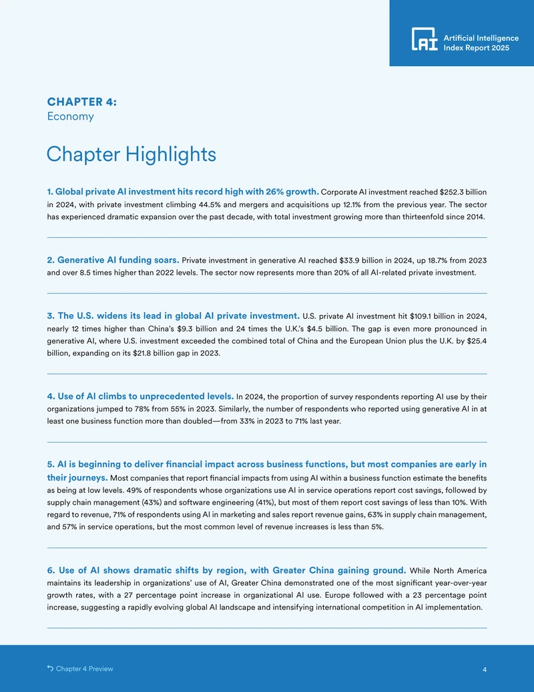

Stanford AI Institute
Published research on AI’s global economic impact: AI investment, jobs, enterprise adoption and robots, measured from five sources.



- Role
- Author of the text and analysis
- Research
- AI investment, jobs, enterprise adoption and robots
- Published
- 7 April 2025, by Stanford HAI, in its AI Index
I wrote the text and analysis of published research from the Stanford Institute for Human-Centered Artificial Intelligence (HAI) on AI’s global economic impact: AI investment, jobs, enterprise adoption and robots. HAI published it on 7 April 2025 as the economy chapter of its AI Index, Stanford’s annual report on the state of AI.
What I decided
Measured the economy in five layers
The chapter measured AI in the economy with five data sources, one for each layer: Quid for investment, Lightcast for job postings, LinkedIn for hiring, McKinsey’s surveys for company use, and the International Federation of Robotics for robot installations.
Wrote it in two-week memo cycles
Until April 2025 I brought a memo of 4 to 6 pages to the team’s weekly meeting every two weeks, sometimes every week.
Opened with ten findings, each with a comparison
Ten findings open the chapter, each with a claim, a number and a comparison. In 2024, US private AI investment reached $109.1 billion, nearly 12 times China’s $9.3 billion.
How it worked
One chapter for what AI was doing to the economy
The AI Index is Stanford’s annual report on the state of AI, written for policymakers, executives, journalists and the public by its Institute for Human-Centered Artificial Intelligence (HAI). In 2024 I joined it as a graduate researcher, and my assignment was the economy.
Each number rests on a printed rule
A posting counted as an AI job only if it named a skill on Lightcast’s list of AI skills. Robot data run a year behind, so the chapter reported installations for 2023.

Five layers, one year at a time
Each layer has its own source and its own units, from investment in AI to robot installations.
The data as a table
| Measure, source and unit | 2018 | 2019 | 2020 | 2021 | 2022 | 2023 | 2024 |
|---|---|---|---|---|---|---|---|
| Investment, Quid private AI investment, world, billions of US dollars | 43.10 | 58.18 | 73.79 | 145.40 | 113.01 | 104.34 | 150.79 |
| Job postings, Lightcast % of US job postings | 1.38% | 1.52% | 1.37% | 1.49% | 1.69% | 1.39% | 1.79% |
| Hiring, LinkedIn US AI hiring rate, yearly change (December) | 18.62% | 18.32% | 15.58% | 5.50% | 4.33% | −0.73% | 24.73% |
| Company use, McKinsey % of respondents who say their organization uses AI | 47% | 58% | 50% | 56% | 50% | 55% | 78% |
| Robots installed, IFR robots installed, world, thousands | 423 | 387 | 390 | 526 | 553 | 541 | No data |
What came in, and what did not come back
Six sections of the 2024 chapter did not return. Anthropic published its study of how people used its Claude assistant on 10 February 2025, and eight weeks later it was a four-page highlight in the chapter.

Three layers, three comparisons
Global corporate AI investment reached $252.3 billion in 2024, up 25.5% from 2023. The share of survey respondents whose organizations used AI rose to 78%, from 55% in 2023. China installed 276,300 industrial robots in 2023, six times Japan’s number.

The chapter and its data go out together
The chapter runs 77 pages, with 89 figures and an appendix on where each measure comes from. Each chart carries a source line, and the chart data are published as public files.

The chapter’s figures, published and then cited
Launch
“Business is all in on AI, fueling record investment and usage”One of the 2025 AI Index’s top takeaways, built on the chapter
HAI’s launch press release of 7 April 2025 used the chapter’s figures for investment and adoption. Two of HAI’s ten launch charts came from the chapter.
What came next
In October 2025, a Federal Reserve Board research note reproduced the chapter’s data on private AI investment and credited the 2025 AI Index. In January 2026, a White House Council of Economic Advisers report cited the chapter’s figures on investment and adoption, and reproduced its 2024 country ranking.